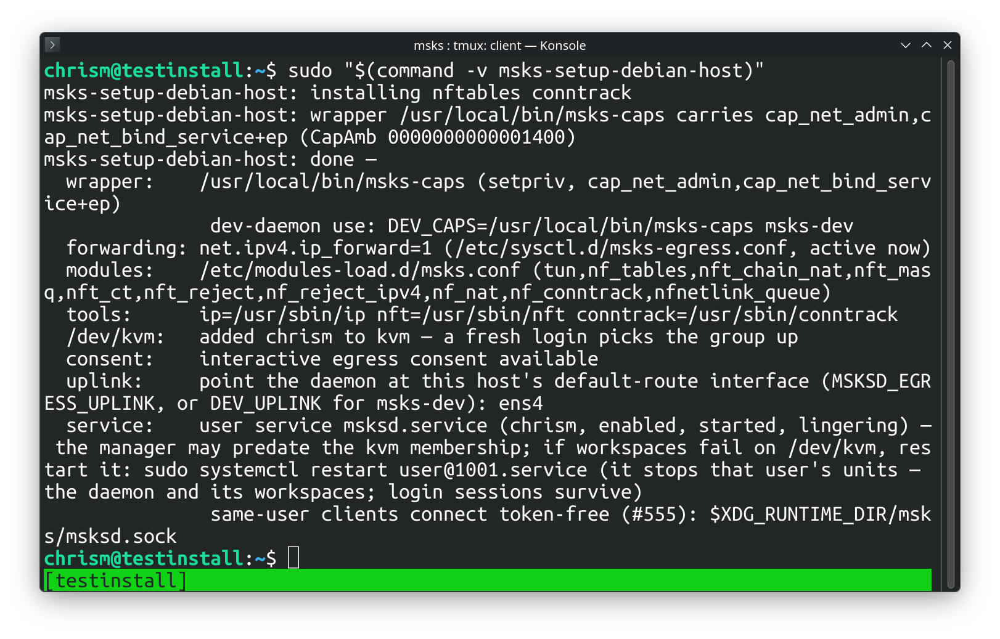

Installation¶
msks ships as one Python wheel with everything inside: the client (msks), the
daemon (msksd), the consent-decider terminal (msks-term-popup), and the
Debian host setup this chapter describes (msks-setup-debian-host).
The wheel needs Python 3.14 or newer.
curl -LsSf https://astral.sh/uv/install.sh | sh
source $HOME/.local/bin/env
uv tool install --python 3.14 msks
There is an automated setup for the remainder on Debian-derived hosts. It's currently bridge-out for any other type of Linux host, save for NixOS, which remains undocumented now, apologies.
Setup using msks-setup-debian-host console script¶
The msks daemon runs the workspaces directly on the host using cloud-hypervisor and various networking and kernel-y bits need to be satisfied for it to work properly.
The host therefore needs pieces the wheel cannot carry. These are software
dependency packages, kernel modules, a routing sysctl, two capabilities for the
daemon's user, and a service that keeps msksd running.
On a Debian deployment host, use msks-setup-debian-host console script
(installed by the wheel) to do those things:
The quoted form matters: the console script lands in ~/.local/bin, which
sudo's path does not carry — the bare name would answer "command not
found".
Run it as the user the daemon will serve under sudo, the SUDO_USER account
is the executing user, and the service the tool registers will belong to your
normal user account.

The run is idempotent: re-run any time, and re-run after a util-linux upgrade
(the wrapper keeps a copy of setpriv; see below).
Taking the setup back off¶
msks-setup-debian-host --uninstall reverses the run: it stops and
disables the msksd user service and removes its unit file and its
enablement symlink (the stop lets the daemon finish its shutdown
cycle, workspaces included), turns linger off, removes the two /etc
files the run landed, removes the capability wrapper, takes the
executing user out of the kvm group (the tool keeps no record of
which run added a membership, so any member leaves — the summary
names the adduser line that restores it), strips the PATH block
from ~/.profile, and removes the cloud-hypervisor binary. Kernel
modules already loaded stay loaded until the next reboot.
After the sysctl file leaves, sysctl --system re-applies every remaining
sysctl.d file — the same set a boot applies. A second owner that wrote its
own forwarding file keeps its setting; a live-only forwarder the tool never
saw keeps its value too. On a host where no remaining file names
net.ipv4.ip_forward, the live value the setup run set stays on until the
next reboot — the summary names sysctl -w net.ipv4.ip_forward=0 for
the operator who wants it off immediately.
The apt packages the run installed stay installed — they are shared
Debian packages, and other software on the host may use them. The
uninstall summary prints the ones whose probes answer present, with a
copy-paste apt-get remove --purge ... line, so you can remove the ones
nothing else needs yourself.
The uninstall run is idempotent the same way: a piece already gone is a
line in the summary, not an error, and the first real refusal stops the
run — the setup run's rule. --no-service holds its meaning — the
service is left alone, every other piece still leaves.
What the setup lands¶
Each phase runs in order, and the first refusal stops the run with an error.
Apt packages. The apt packages required by the server and the client.
The capability wrapper. /usr/local/bin/msks-caps — a
root-owned copy of util-linux setpriv carrying file
capabilities cap_net_admin and cap_net_bind_service. The
daemon's per-VM taps and nftables chains need net_admin; the
egress stack's DHCP (port 67) and DNS (port 53) need
net_bind_service. The wrapper raises both caps ambient, so
they flow to the daemon and every tool it execs — and the grant
surface is the wrapper's execute permission: any local user
able to run it holds the two capabilities through it. After
installing it the setup runs the wrapper and verifies the caps.
The routing kernel. /etc/sysctl.d/msks-egress.conf sets
net.ipv4.ip_forward=1 at boot, and the value applies
immediately: route packets between the per-VM taps and the
host uplink. The daemon reads the sysctl at startup and refuses
every egress workspace, with the cause named, while it reads 0.
/etc/modules-load.d/msks.conf loads the netfilter and tun
modules at boot: the nftables machinery, NAT, conntrack, the
deny RST, and the interactive consent queue. A module the
kernel tree lacks lands a warning with the kernel package that
carries it; interactive egress consent needs its whole module
set, and the run's summary names the verdict.
/dev/kvm. Access arrives through the kvm group on the
daemon's user; the setup adds the executing user to the group
when missing. The account picks the group up at the next login; an
already-running session keeps the old groups until it starts
anew.
The login PATH. The account that typed the command (the
SUDO_USER under sudo) gains /usr/sbin and /sbin on its
login PATH: the setup appends a guarded block to that account's
~/.profile, idempotently, so a re-run never duplicates it.
Debian keeps nft, conntrack, and the e2fsprogs trio in
/usr/sbin, and a non-root login shell does not carry the
directory — the block means the operator's next login can type
the names the daemon execs. A daemon started by the systemd
user unit finds the directories on its own PATH (the unit
manager's default carries them); a daemon started by hand
(msks-dev, a bare msksd) inherits the session's PATH, so
the same login carries the fix to both shapes.
The systemd user service. On a host systemd manages, the
setup writes ~/.config/systemd/user/msksd.service for the
executing user and enables it. The unit execs msksd through
the wrapper, so the file capabilities grant it the same
posture a root unit would have. It runs with
MSKSD_EGRESS_ENABLED=true and the uplink interface the setup
detected, and it creates the unix listener's runtime directory
under the user's own $XDG_RUNTIME_DIR (RuntimeDirectory=msks,
the client's default socket candidate). It restarts the daemon
on failure. Finally, loginctl enable-linger keeps the user
manager, and the daemon, running across logouts and boots. A user
manager that was already running may have forked before the kvm
group write reached it; the daemon then holds the old groups
until that manager restarts, and the run's summary says so. A re-run
rewrites the unit and restarts a running daemon onto it when
the unit changed.
Cloud Hypervisor's static release binary. So guest VMs can be started.
PATH manipulation. Adds /usr/sbin to the sudoing user's PATH so various
binaries can be found.
The run ends with a summary: the wrapper and its caps, the sysctl, the modules
file and the consent verdict, the tools' paths, /dev/kvm, the detected
uplink, and the service line.
You will need to log out and back in for msksd doctor to return clean after
using the host installer.
The same host by hand (if you'd rather not trust msks-setup-debian-host)¶
msks-setup-debian-host is a program the wheel ships, and
running it means running shipped code as root. An operator who
prefers to read every step first can land the same host in an
interactive root shell.
To do so, install the package set — the same set
msks-setup-debian-host lands, so a host finished by hand
comes up clean under the doctor too:
sudo -i apt install iproute2 \
nftables \
conntrack \
procps \
util-linux \
libcap2-bin \
kmod \
e2fsprogs \
qemu-utils \
genisoimage \
libnetfilter-queue1 \
libnfnetlink0 \
openssh-client \
rsync \
tmux \
ca-certificates
ca-certificates is the set's one self-serving package: the CA
bundle the next step's curl to github.com needs for its TLS
verification.
The capability wrapper — a fresh root-owned copy of setpriv,
with the two capabilities set and read back (a filesystem
without capability xattrs takes the setcap and loses it, so
the readback is the proof):
install -o root -g root -m 0755 "$(command -v setpriv)" /usr/local/bin/msks-caps
setcap cap_net_admin,cap_net_bind_service+ep /usr/local/bin/msks-caps
getcap /usr/local/bin/msks-caps
The functional proof — the daemon's exact exec line, with the
ambient set inspected in the process it starts (the CapAmb
line must carry a nonzero mask):
/usr/local/bin/msks-caps --inh-caps=+net_admin,+net_bind_service \
--ambient-caps=+net_admin,+net_bind_service \
-- sh -c "sed -n 's/^CapAmb:[[:space:]]*//p' /proc/self/status"
Routing, at boot and now:
printf '%s\n' \
'# route packets between per-VM taps and the host uplink' \
'net.ipv4.ip_forward = 1' > /etc/sysctl.d/msks-egress.conf
sysctl -p /etc/sysctl.d/msks-egress.conf
The kernel module set, at boot and now:
printf '%s\n' tun nf_tables nft_chain_nat nft_masq nft_ct nft_reject \
nf_reject_ipv4 nf_nat nf_conntrack nfnetlink_queue \
> /etc/modules-load.d/msks.conf
modprobe tun nf_tables nft_chain_nat nft_masq nft_ct nft_reject \
nf_reject_ipv4 nf_nat nf_conntrack nfnetlink_queue
Interactive egress consent needs nft_reject,
nf_reject_ipv4, and nfnetlink_queue loaded — check with
grep -w <module> /proc/modules (or lsmod) when a load
landed quietly.
/dev/kvm for the daemon's user, picked up at that account's
next login:
The systemd user service is the daemon user's own piece — leave
the root shell and run it as that user. Write
~/.config/systemd/user/msksd.service with the unit below
(adjust the msksd path to where the install put it, and the
uplink to this host's default-route interface — ip route show
default names it):
[Unit]
Description=msks daemon (workspaces as cloud-hypervisor microvms)
[Service]
ExecStart=/usr/local/bin/msks-caps --inh-caps=+net_admin,+net_bind_service --ambient-caps=+net_admin,+net_bind_service -- /path/to/msksd
Environment=MSKSD_EGRESS_ENABLED=true
Environment=MSKSD_EGRESS_UPLINK=<uplink>
RuntimeDirectory=msks
Restart=always
RestartSec=1
TimeoutStopSec=180s
[Install]
WantedBy=default.target
Then enable it, as that user:
loginctl enable-linger is the one root command among these —
it keeps the user manager, and the daemon, running across
logouts and boots.
The daemon's workspace machinery execs cloud-hypervisor (the VMM).
Cloud Hypervisor's static release binary is the sanctioned VMM install — Debian's archive does not carry it.
curl -L -o cloud-hypervisor-static \
https://github.com/cloud-hypervisor/cloud-hypervisor/releases/latest/download/cloud-hypervisor-static
curl -L -o ch-remote-static \
https://github.com/cloud-hypervisor/cloud-hypervisor/releases/latest/download/ch-remote-static
sudo install -m755 cloud-hypervisor-static /usr/local/bin/cloud-hypervisor
sudo install -m755 ch-remote-static /usr/local/bin/ch-remote-static
The host doctor¶
The The host doctor chapter documents the msksd doctor command
that can diagnose installation issues.
The alternative paths¶
A development host (this repository's checkout) runs the daemon through Nix and devenv; the Development environment chapter owns that path.